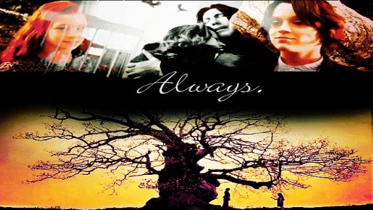

Abstract
There is sometimes a very fine line between 'good' and 'evil' and Snape is the prime example of that being mean and unfair as well as a great
aid in defeating Lord Voldemort. He appears to be moving along the good-evil axis within the story, and it is only after finishing the whole
series that the readers can fully try to understand the complex psychological motivation for his actions. Because of Snape's complexity,
readers are forced to go back and take another, closer, look at his characters.
Introduction
"Always"- This one word gained Severus Snape millions of fans worldwide. Snape's life had been an intense rollercoaster and the trials he had
faced were almot at par with those that Harry Potter had persevered through. For almost seven books and more than 3,000 pages, Snape had been
a character readers loved to hate. Professor Severus Snape, who had seemed throughly evil all through the series, but with a radical shift in
his character stood for one of the biggest plot twist in all seven books. Not only did he turn out to be a hero- he had also, all his life,
felt a deep love for Harry's mother Lily and had risked his life on a daily basis for her- and ultimately for Harry as well. According to
Harry, Professor Snape is "probably the bravest man ever knew".
While trying to understand Snape's complicated reasons, we have to start by looking at his childhood which is described for the first time in
the very last book "Harry Potter and the Deathly Hallows". There are events and circumstances in Snape's childhood that can give some
explanation to his actions and provide us with a deeper understanding of his motives. There was not such detailed description of Snape's
childhood, but a few words show for a quite difficult up-bringing.
Snape's years at Hogwarts are difficult to say and it is the period of time in which Snape turns into the puzzling person. In the fifth book,
"Harry Potter and the Order of Phoenix", we get first glimpse of Snape's school years. While elevan-year-old Snape is sorted into the house
of Slytherin, Lily is sorted into the house of Gryffindor, a natural rival to Slytherin. In addition to this Harry's father, James Potter,and
his friend Sirius Black are both into Gryffindor and they treat Snape badly since very first meeting on the Hogwarts Express.
Young Snape has the capacity to be kind, trying to console Lily, but easily triggered by James comments. James and Sirius loathe Snape and
humiliate him when they get chance, preferably in front of Lily. It is only natural to hate the people who treat you in that manner for
that many years; Snape's reaction is only human. His suffering gives the reader an emotional investment in his development. What makes
for some confusion while reading the book is how Snape transfers his hatred for James onto Harry while the reader is left in the dark as
to why that is.
In the last book, while reading Snape's memories, we discover that Lily and Snape's friendship is lost because Lily doesn't like the people
Snape surrounds himself with and because he had called her a 'mudblood', a derogatory term for someone who is muggle-born, in a fit of rage
caused by James and Sirius. Not only does he lose his best friend and love of his life, the fact that Lily later goes on and marry James Potter,
his worst enemy, must have been difficult to take. Snape sees Harry, a spitting image of James, except for the green eyes he got from Lily which
are always reminding him of his lost love and decides to torment him in any way possible.
Furthermore, adult Snape is more complex than his young version, he is constantly moving between making life difficult for Harry and lending a helping
hand in various ways. In the very first book,"Harry Potter and The Philosopher's Stone"(1997), during Quidditch game, as Harry is riding his broom,
someone put a shell on it tries to throw him off. Ron and Hermione see Snape in the audience with fixed eyes on Harry and muttering words under his
breath. They assume it is Snape who put a spell on Harry's broom but later it is revealed that it is Professor Quirell who tried to kill Harry and
Snape actually prevents Harry from falling to his death by cancelling out Professor Quirell's curse with his own counter-curse.
In the fifth book, "The Order of the Phoenix", Harry has a fake vision, planted by Voldemort himself, of how Voldemort is torturing his Godfather
Sirius Black. To make sure it is not a trap, Harry and his friends try to contact Sirius through the fireplace in the Professor Dolores Umbridge's
Office but are caught in the office. Snape alerts the Order to save Sirius. He could easily ignored the message and let the Death Eaters kill Harry
and his friends. But he does not;he makes sure that help is on the way, though he does not take part in the rescue mission himself. From the readers
perspective,it is expected that Snape would pretend to not understand and not to care so when it is revealed that it is because of him that help was
providedit reverses the reader's mind.
Not only does Professor Snape save Harry's life on more than one ocassion, he is also a great assistance in defeating Lord Voldemort often risking his own
life. In the "Harry Potter and the Philosopher's Stone", Professor Quirell is on a mission for Voldemort, trying to steal the Philosopher's Stone in order
to make the Elixir of Life and thus helping Voldemort coming back to life just inhabiting someone else's body. Quirell sets a loose troll in the castle and
during the chaos, that follows, he tries to go through the trap door but Snape rushes to stop him, he is wounded in the leg by the three-headed dog gaurding
the trap door. From the fact that the readers know that Snape is wounded, it seems as if he was one to steal the stone
In Adiition to this, in the last book, "Harry Potter and the Deathly Hallows", Harry and his friends are looking for horcruxes, pieces of Voldemort's soul
trapped inside on an object, which are extremely difficult to destroy. One way is to use the sword of Gryffindor. Dumbledore made a replica of the sword and
gave the real sword to Snape before he died. There is a well-kept secret all through the last book and it is only after Snape's death that the readers, and
Harry and his friends, realize what Dumbledore planned and how Snape executed the plan in order to give the sword to Harry.
Harry cannot understand Snape's motives, it is kept secret until the very last book. Because of the fact that the reader sees everything mainly through Harry,
there is a tendency to dismiss all evidence of how Snape might be a good character.
Snape had made big sacrifices in his life in order to defeat Voldemort but most of them are revealed in the last book when Harry looks at Snape's memories.
As when Dumbledore finds one horcrux and destroy it, he is fatally cursed. He is slowly dying. His last request is to have Snapr kill him. Apart from the
emotional impact of killing Dumbledore it would also mean that he would be misunderstood and perceived as a traitor by everyone. by killing Dumbledore, Snape
manages to play the part of ally to his enemies and an enemy to his friend.
One can easily state that Snape has its difficult from the start and in "Harry Potter and the Deathly Hallows" Dumbledore says,"You know, I sometime think we
sort too soon..." reffering to how Snape was sorted into the House of Slytherin. A true Gryffindor student has bravery as the most essential trait, and
according to Dumbledore this is where Snape indeed belong.
To conclude, one might have guessed, the answer to that will never ever be that simple. Surely, we all have our own opinions on Snape's action, but really, the
the true answer is that no one is truly good or bad in the end: just made up of many different shades.
So, to quote Sirius Black from "Harry Potter and the Order of Phoenix":
"We've all got both light and dark inside us. What matters is the part we choose to act on. That's who we really are".